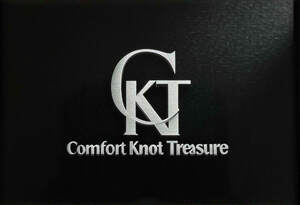

Trade Mark Journal No.2025/037 12 September 2025
UK00004248366 12 August 2025 (3,14,21,24,25)

- Class 3
- Perfumes kitchen accessories; Synthetic detergents for clothes; Perfumes; Fragrances; Oils for perfumes and scents; Perfumery and fragrances; Perfume; Aromatics for perfumes; Potpourris [fragrances]; Perfume oils; Liquid perfumes; Perfumes for ceramics; Aromatics for fragrances; Colognes; Extracts of perfumes; Scents; Fragrances for automobiles; Extracts of flowers [perfumes]; Flowers (Extracts of -) [perfumes]; Extracts of flowers being perfumes; Natural oils for perfumes; Musk [perfumery]; Perfumes for cardboard; Fragrance sachets; Perfumeries; Perfumery; Household fragrances; Perfumery products; Amber [perfume]; Solid perfumes; Deodorants for personal use [perfumery]; Cedarwood perfumery; Body deodorants [perfumery]; Perfume oils for the manufacture of cosmetic preparations; Body fragrances; Perfumed potpourris; Perfumed soaps; Aftershave lotions; Aftershaves; Fumigation preparations [perfumes]; Cologne; Room perfume sprays; Ionone [perfumery]; Room fragrances; Fragrance preparations; Perfume water; Perfumed creams; Perfumed sachets; After-shave lotions; Scented soaps; Scented oils; Fragrance emitting wicks for room fragrance; Synthetic perfumery; Essences for fragrancing; Fragrance refills for non-electric room fragrance dispensers; Fragrance sachets for eye pillows; Perfumed powders [for cosmetic use]; Vanilla perfumery; Perfumed powders; Aftershave balms; Synthetic vanillin [perfumery]; Perfumed lotions [toilet preparations]; After-sun oils [cosmetics]; Aromatherapy lotions; Perfuming sachets; Ethereal oils for fragrancing; Scented body lotions and creams; Mint for perfumery; Moisturisers [cosmetics]; Scented sachets; Skin fresheners [cosmetics]; Scented body lotions; Geraniol for fragrancing; Scented linen sprays; Suntan oils [cosmetics]; Scented water for fragrancing; Air fragrance preparations; Geraniol fragrancing compounds; Aftershave creams; Tanning oils [cosmetics]; Room perfumes in spray form; Perfumes for industrial purposes; Perfumed soap; Roll-on deodorants [toiletries]; Feminine deodorant sprays; Sachets for perfuming linen; Linen (Sachets for perfuming -); Cosmetics; Peppermint oil [perfumery]; After-shave balms; Pomanders [aromatic substances]; Perfumed body lotions [toilet preparations]; Essential oils as perfume for laundry purposes; Aromatic potpourris; Natural perfumery; Fragrances for personal use; Eau de cologne [cologne water]; Incense sachets; Fragrant sachets; Cosmetics in the form of lotions; Beauty lotions; Skincare cosmetics; Agarwood [incense]; Air fragrance reed diffusers; Eau de colognes; After-shave creams; Aftershave; Scented body creams; Suncare lotions; Facial oils; Facial massage oils; Body and facial oils; Facial oil; Facial lotions; Facial moisturizers; Facial butters; Hair oils; Oils for the skin; Massage oils; Massage oils and lotions; Facial lotion; Facial emulsions; Facial cleansers; Shaving oils; Facial soaps; Body massage oils; Body and facial butters; Body oils [for cosmetic use]; Face oils; Cosmetic facial lotions; Facial lotions [cosmetic]; Facial creams; Cosmetic oils for the epidermis; Facial scrubs; Facial moisturisers [cosmetic]; Oils for hair conditioning; Body and facial creams [cosmetics]; Body oils; Facial cleansers [cosmetic]; Body and facial gels [cosmetics]; Facial makeup; Mineral oils [cosmetic]; Facial masks; Facial scrubs [cosmetic]; Cuticle oils; Facial washes; Facial creams [cosmetics]; Facial washes [cosmetic]; Facial gels [cosmetics]; Skin care oils [cosmetic]; Cosmetic facial masks; Facial masks [cosmetic]; Facial toners [cosmetic]; Facial beauty masks; Facial creams [cosmetic]; Facial creams [for cosmetic use]; Perfumed oils for skin care; Sun-tanning oils; Cosmetic sun oils; Facial wash; Facial cleansing grains; Facial serum for cosmetic use; Facial cleansing milk; Bath oils; Cosmetics in the form of oils; Shower oils; Facial toner; Facial cream; Aromatic oils for the bath; Facial cream [for cosmetic use]; Skin care oils [non-medicated]; Facial preparations; Massage oils, not medicated; Cosmetic facial packs; Facial packs [cosmetic]; Tissues impregnated with essential oils, for cosmetic use; Hair oil; Non-medicated oils; Baby oils; Body oil [for cosmetic use]; Hair moisturizers; Facial concealer; Suntan oils for cosmetic purposes; Massage oil; Facial peel preparations for cosmetic use; Facial wipes impregnated with cosmetics; Oils for moisturising the skin after sunbathing; Cosmetic hair lotions; Facial packs; Hair lotions; Non-medicated bath oils; Bath oils (Non-medicated -); Facial conditioning preparations; Essential oils; Non-medicated shower oils; Moisturizing body lotions; Eucalyptus oil for cosmetic use; Antistatic dryer sheets; Anti-static dryer sheets; Henna; Henna powders; Henna [cosmetic dye]; Henna for cosmetic purposes; Hair colouring and dyes; Dyes for the hair; Hair dyes; Hair dye; Colouring lotions for the hair; Hair colorants; Hair dyeing preparations; Hair colourants; Hair glazes; Hair lighteners; Hair coloring preparations; Eyelash dye; Hair colouring; Hair lotion; Hair cream; Hair relaxers; Hair lacquer; Beard dyes; Hair colouring preparations; Hair creams; Hair balm; Cosmetic preparations for the hair and scalp; Hair gel; Hair wax; Bleaching preparations for the hair; Hair bleaching preparations; Basma [cosmetic dye]; Hair bleaches; Hair styling lotions; Wax treatments for the hair; Hair glaze; Hair balms; Hair tinting preparations; Hair styling gel; Hair bleach; Hair colour removers; Colour removers for the hair; Hair powder; Hair color removers; Hair color; Hair pomades; Hair texturizers; Hair rinses [for cosmetic use]; Hair shampoo; Baby hair conditioner; Styling paste for hair; Hair emollients; Hair lacquers; Hair moisturisers; Dyes (Cosmetic -); Cosmetic dyes; Hair cosmetics; Hair shampoos; Hair moisturising conditioners; Depilatory sugar paste; Hair spray; Tints for the hair; Hair rinses; Hair chalks; Non-medicated balm for hair; Hair conditioner; Hair styling waxes; Hair permanent treatments; Hair mousse; Depilatory lotions; Beauty preparations for the hair; Non-medicated hair lotions; Hair styling spray; Hair gels; Nail varnish; Varnish (Nail -); Nail makeup; Nail gel; Nail glitter; Nail cream; Nail enamel; Nail enamels; Nail polish; Nail varnishes; Nail enamel remover; Nail cosmetics; Nail paint [cosmetics]; Gel nail removers; Nail varnish remover [cosmetics]; Nail varnish removers; Nail enamel removers; Nail whiteners; Nail polish remover; Nail polish removers; Nail strengtheners; Nail polish pens; Nail conditioners; Nail polish removers [cosmetics]; Nail polish remover pens; Nail hardeners [cosmetics]; Nail tips [cosmetics]; Nail hardeners; Nail primer [cosmetics]; Nail tips; Nail art stickers; Nail polishing powder; Nail varnish removing preparations; Cosmetic nail preparations; Nail base coat [cosmetics]; Nail polish base coat; Nail buffing preparations; Cosmetic preparations for nail drying; Nail varnish for cosmetic purposes; Nail polish top coat; Nail decolorants; Powder for forming sculpted finger nail tips; Adhesives for false eyelashes, hair and nails; Skin, eye and nail care preparations; Nail care preparations; Cosmetic nail care preparations; Nail repair preparations; Preparations for removing gel nails; Tooth polish; Dressings for nail reconstruction; Lotions for strengthening the nails; Tooth polishes; Tooth gel; Fingernail decals; Cuticle cream; Eyebrow gel; Glue for strengthening nails; Nail-polish removers; Cuticle removers; Lip balm; Lip balms; Lip balm [non-medicated]; Lip balms [non-medicated]; Non-medicated lip balms; Lip cream; Lip gloss; Lip glosses; Lip makeup; Lip cosmetics; Lip pomades; Shaving balm; Lip liner; Lip gloss palettes; Lip tints; Shave balm; Beard balm; Cleansing balm; Lip conditioners; Blemish balm creams; Lip liners; Aftershave balm; Lip pencils; Lip neutralizers; Lip protectors [cosmetic]; Lip rouge; Beauty balm creams; Lip polisher; Lip stains [cosmetics]; Lip protectors (Non-medicated -); Shaving balms; Baby bottom balm; Lip coatings (Non-medicated -); Skin balms [cosmetic]; Lip coatings [cosmetic]; Skin balms (Non-medicated -); Non-medicated skin balms; Lip care preparations; Non-medicated lip care preparations; Balms (Non-medicated -); Lip stains for cosmetic purposes; Foot balms (Non-medicated -); Moisturising body lotion [cosmetic]; Aftershave moisturising cream; Skin cleansing cream [non-medicated]; Moisturising skin lotions [cosmetic]; Moisturising skin creams [cosmetic]; Lipstick; Skin cleansing cream; Skin cleansing lotion; Cosmetic nourishing creams; Moisturizing creams; Mattifying gel cream; Skin relief serum [cosmetic]; Skin lotion; Skin cream [for cosmetic use]; Moisturising gels [cosmetic]; Moisturising creams; Skin moisturizer; Skin moisturizer masks; Sun protectors for lips; Cleansing cream; Skin cream; Refill packs for skin care cream dispensers; Moisturising creams, lotions and gels; Eyebrow mascara; Skin recovery creams [cosmetics]; Shaving lotion; Hydrating creams for cosmetic use; Moist wipes impregnated with a cosmetic lotion; Cleansing creams [cosmetic]; Face cream (Non-medicated -); Cosmetic creams for dry skin; Skin moisturiser; Moisturizing preparations for the skin; Skin care creams [cosmetic]; Cosmetic creams for skin care; Eye wrinkle lotions; Cosmetic pencils for cheeks; Hand lotion (Non-medicated -); Non-medicated scalp treatment cream; Milky lotions for skin care; Cosmetic creams for the skin; Skin creams [cosmetic]; Skin moisturizers used as cosmetics; Skin care lotions [cosmetic]; Skin creams [non-medicated]; Non-medicated skin creams; After-sun lotions [for cosmetic use]; Skin creams [for cosmetic use]; Skin moisturizers; Non-medicated cleansing creams; Body mask lotion; Cream for whitening the skin; Whitening the skin (Cream for -); Non-medicated skin lotions; Body mask cream; Gel scrub; Lipsticks; Non-medicated skin serums; Softening cleanser [cosmetic]; Eye cream; Eye creams; Eye lotions; Eye gel; Eye concealers; Eye make-up; Eye cosmetics; Eye makeup; Hand cream; Anti-wrinkle cream; Eye shadow; Shaving cream; Anti-aging cream; Gel eye masks; Eye make-up removers; Cosmetics in the form of eye shadow; Cosmetic creams for firming skin around eyes; Anti-wrinkle cream [for cosmetic use]; Eye liner; Eye makeup remover; Eye gels; Sunscreen cream; Eye shadows; Camouflage cream; Cosmetic eye gels; Body cream; Cosmetic eye pencils; Eye pencils; Eye sticks; Creams (Non-medicated -) for the eyes; Eye correction serum; Eye brightening correctors; Night cream; Cosmetic preparations for eye lashes; Bath cream; Cold cream; Shoe cream; Shower cream; Eye stylers; Day cream; Horse oil cream for skin care; Cream foundation; Retinol cream for cosmetic purposes; Base cream; Wrinkle resistant cream; Under eye correctors; Body cream for cosmetic use; Cream soaps; Gel eye patches for cosmetic purposes; Face creams; Body cream soap; Hair removing cream; Skin care cosmetics; Exfoliants for the care of the skin; Essences for skin care; Skin care mousse; Skin care preparations; Cleansing milks for skin care; Skin care creams, other than for medical use; Skin care (Cosmetic preparations for -); Cosmetic preparations for skin care; Skin care products for animals; Hand masks for skin care; Foot masks for skin care; Non-medicated skin care preparations; Wrinkle removing skin care preparations; Hair care creams; Body care cosmetics; Hair care lotions; Hair care serums; Hair care serum; Cosmetics for use in the treatment of wrinkled skin; Hair care creams [for cosmetic use]; Hair care lotions [for cosmetic use]; Beauty creams for body care; Lotions for face and body care; Hair care masks; Cosmetic products in the form of aerosols for skin care; Cosmetics for the treatment of dry skin; Sun care lotions; Sun care lotions [for cosmetic use]; Soaps for body care; Hair care agents; Cosmetics for protecting the skin from sunburn; Hair care preparations; Cosmetic hair care preparations; Facial care preparations; Cosmetic preparations for body care; Skin lotions; Lotions for the skin; Skin emollients; Deodorants for body care; Skin moisturisers; Skin make-up; Preparations for the care of the body; Eye care products, non-medicated; Beauty care cosmetics; Skin cleansers; Skin hydrators; Skin creams; Creams for the skin; Body cleaning and beauty care preparations; Oil baths for hair care; Skin cleansers [cosmetic]; Skin lighteners; Beauty care preparations; Non-medicated body care preparations; Colour cosmetics for the skin; Sun care preparations for cosmetic use; Skin conditioners; Shampoo; Dandruff shampoo; Shampoos; Waterless shampoo; Baby shampoo; Baby shampoo mousse; Carpet shampoo; Shampoo bars; Non-medicated hair shampoos; Dry shampoos; Shampoo for animals; Emollient shampoos; Waterless shampoos; Shampoos for human hair; Car shampoos; Non-medicated shampoos; Pet shampoos; Body shampoos; Hair conditioner bars; Shampoos for babies; Deodorant soap; Soap (Deodorant -); Non-medicated pet shampoos; Vehicle shampoos; Hair rinses [shampoo-conditioners]; Shampoos for pets; Pets (Shampoos for -); Hair conditioners; Hair sprays; Mousses [toiletries] for use in styling the hair; Shower soap; Creams (Soap -) for use in washing; Refill packs for shampoo dispensers; Aloe soap; Hair serums; Bath lotion; Shaving soap; Conditioners for treating the hair; Hair balsam; Hair tonic [non-medicated]; Hair mascara; Detergent soap; Shampoos for vehicles; Hair tonic; Styling gels for the hair; Hair styling gels; Hair tonic [for cosmetic use]; Hair conditioners for babies; Styling sprays for the hair; Hair tonics; Antiperspirant soap; Soap (Antiperspirant -); Hair strengthening treatment lotions; Shampoos for pets [non-medicated grooming preparations]; Shaving soaps; Shaving lotions; Shower and bath gel; Bath and shower gel; Bath soap; Aloe soaps; Dandruff shampoos, not for medical purposes; After-shave gel; Conditioners in the form of sprays for the scalp; Hair tonics [for cosmetic use]; Hair-washing powder; Shower gel; Toothpaste; Bath and shower oils [non-medicated]; Gels for fixing hair; Soap products; Liquid bath soap; Cover sticks; Soap sheets; Abrasive sheets; Shoe black [shoe polish]; Cleaning sprays; Cleaning preparations; Washing soda, for cleaning; Cleaning fluids; Carpet cleaning preparations; Wiping cloth impregnated with a cleaning preparation for cleaning eye glasses; Cleaning preparations for cleansing drains; Preparation for cleaning dentures; Cleaning foam; Degreasers for cleaning purposes; Drain cleaning preparations; Cleaning chalk; Chalk (Cleaning -); Dry cleaning preparations; Laundry detergents for household cleaning use; Windscreen cleaning preparations; Oven cleaning preparations; Teeth cleaning (Preparations for -); Preparations for cleaning teeth; Cleaning preparations for the teeth; Preparations for cleaning the teeth; Cleaning dentures (Preparations for -); Preparations for cleaning dentures; Dentures (Preparations for cleaning -); Car cleaning preparations; Ammonia for cleaning purposes; Floor cleaning preparations; Cleaning and fragrancing preparations; Cloths impregnated with polishing preparations for cleaning; Dry cleaning fluids; Glass cleaning preparations; Automotive cleaning preparations; Wallpaper cleaning preparations; Tooth cleaning preparations; Foam cleaning preparations; Hair cleaning preparations; Wipes impregnated with a cleaning preparation; Cloths impregnated with a detergent for cleaning; Windscreen cleaning fluids; Windscreen cleaning liquids; Skin cleaning and freshening sprays; Toilet cleaning gels; Windshield cleaning liquids; Cleaning pads impregnated with cosmetics; Pre-moistened towelettes impregnated with a detergent for cleaning; Wipes incorporating cleaning preparations; Teeth cleaning lotions; Cleaning preparations for leather; Cakes of soap for household cleaning purposes; Leather and shoe cleaning and polishing preparations; Pastes for cleaning shoes; Bath foam; Foam bath; Cleansing foam; Abrasive sanding sponges; Shaving foam; Foam for use in shaving; Cleansing mousse; Bath gel; Shower and bath foam; Bath and shower foam; Emery cloth; Shaving mousse; Toothpaste in soft cake form; Shaving gel; Pre-shave foams; Baby bath mousse; Abrasive emery paper; Lavender gel; Bath flakes; Bath pearls; Emery paper; Abrasive paper [sandpaper]; Shave gel; Moist paper hand towels impregnated with a cosmetic lotion; Wipes impregnated with a skin cleanser; Disposable wipes impregnated with cleansing compounds for use on the face; Foams for the bath; Bath foams; Sponges impregnated with soaps; Foam bath preparations; Cakes of soap for body washing; Cleaner for cosmetic brushes; Face scrub; Exfoliating body scrub; Exfoliating scrubs for the hands; Body scrub; Exfoliating scrubs for the face; Exfoliating scrubs for the feet; Ethereal essences and oils; Oils for toiletry purposes; Natural oils for cleaning purposes; Oils for cleaning purposes; Natural oils for cosmetic purposes; Distilled oils for beauty care; Hair liquids; Hair nourishers; Hair fixing oil; Hair protection lotions; Hair liquid; Hair mousses; Hair neutralizers; Hair masks; Hair and body wash; Beard oil; Face masks; Cleaning masks for the face; Face and body masks; Face wash; Face scrubs (Non-medicated -); Face wipes; Face wash [cosmetic]; Make-up for the face; Make-up for the face and body; Body mask powder; Skin masks; Face powder; Face paint; Face and body creams; Face and body glitter; Face and body lotions; Toning lotion, for the face, body and hands; Face blusher; Clay skin masks; Face glitter; Cleansing masks; Face powder [for cosmetic use]; Body masks; Beauty masks for hands; Face powders; Face powder (Non-medicated -); Make-up preparations for the face and body; Exfoliating scrubs for the body; Cosmetic white face powder; Cosmetic mud masks; Face gels; Pressed face powder; Face paints; Pores tightening mask packs used as cosmetics; Hydrating masks; Skin masks [cosmetics]; Face packs [cosmetic]; Face creams for cosmetic use; Liquid soaps for hands and face; Face packs; Cosmetic face powders; Cosmetic paste for application to the face to counteract glare; Face powders [for cosmetic use]; Creamy face powder; Face dusting powders; Loose face powder; Face lifting stickers for cosmetic use; Body scrubs; Beauty masks; Masks (Beauty -); Cosmetic masks; Cloths impregnated with a skin cleanser; Cosmetic body scrubs; Body scrubs [cosmetic]; Antistatic drier sheets; Paper hand towels impregnated with cosmetics; Paper hand towels impregnated with cleaning agents; Scented linen water; Sponges impregnated with toiletries; Toiletries; Toilet soaps; Face powder in the form of powder-coated paper; Hand soaps; Hand soap; Hand lotions; Hand scrubs; Hand creams; Hand cleaners [hand cleaning preparations]; Hand cleansers; Hand gels; Hand cleaner; Hand powders; Hand milks; Refill packs for hand soap dispensers; Impregnated paper tissues for cleaning dishware; Washing balls filled with laundry detergents; Cloths impregnated with a detergent for cleaning camera lenses; Toilet cleaners; Laundry balls filled with laundry detergents; Cleaning preparations for automobiles; Cleaning preparations for fabrics; Detergent compositions for cleaning shoes; Vehicle cleaning preparations; Automobile cleaning preparations; Laundry detergents; Laundry soap; Laundry balls containing laundry detergent; Laundry bleach; Laundry soaps; Laundry powder; Laundry starch; Bluing for laundry; Powder laundry detergents; Laundry liquids; Blueing for laundry; Laundry blueing; Blueing (Laundry -); Laundry preparations; Laundry additives; Laundry sizing; Commercial laundry detergents; Laundry blue; Laundry wax; Wax (Laundry -); Biological laundry detergents; Liquid laundry detergents; Soaps for laundry use; Laundry fabric conditioner; Liquid soap for laundry; Rinsing agents for laundry; Laundry glaze; Glaze (Laundry -); Liquid soaps for laundry; Powder for laundry purposes; Fabric softener for laundry; Starch for laundry purposes; Fabric softeners for laundry; Laundry soaking preparations; Preparations for soaking laundry; Soaking laundry (Preparations for -); Bleaching preparations [laundry]; Laundry bleaching preparations; Fabric softener for laundry use; Chemical laundry preparations; Softeners (Fabric -) for laundry use; Fabric softeners for laundry use; Substances for laundry use; Color run prevention laundry sheets; Bleaching preparations for laundry use; Laundry preparations for attracting dirt; Colour run prevention laundry sheets; Colour-brightening chemicals for household purposes [laundry]; Color-brightening chemicals for household purposes [laundry]; Starch glaze for laundry purposes; Washing-up detergent; Laundry preparations for attracting dyes; Laundry additives for water softening; Natural starches for laundry purposes; Dishwasher detergents; Detergents for machine dishwashing; Washing powder; Bleaching preparations and other substances for laundry use; Body lotion; Body lotions; Body deodorants; Scented body spray; Body sprays; Body spray; Body moisturisers; Body soap; Moisture body lotion; Body gels [cosmetics]; Body creams [cosmetics]; Body mist; Body oil; Body oil spray; Body polish; Body creams; Body glitter; Body butters; Body powder; Body washes; Body sprays [non-medicated]; Body wash; Body milk; Body soufflé; Beauty tonics for application to the body; Body butter; Body cleansing foams; Body gels; Body paint (cosmetic); Cosmetic body mud; Body emulsions; Body glitters; Sparkling fluid for the body; Body splash; Body milks; Body talcum powder; Body powder (Non-medicated -); Non-medicated body soaks; Hand and body butter; Baby body milks; Liquid latex body paint for cosmetic purposes; Body emulsions for cosmetic use; Creams (Non-medicated -) for the body; Body firming creams; Sanding gloves; Pumice stones for personal use; Eye make up remover; Make up foundations; Shaving stones; Pumice stones for use on the body; Baby lotions; Baby wipes; Baby lotion; Baby suncreams; Baby powder; Baby powders; Baby oil; Moisturizing milk; Exfoliating creams; Anti-wrinkle creams; After-sun creams; Exfoliant creams; Anti-aging creams; Anti-ageing creams; Creams for firming the skin; Suntan creams [self-tanning creams]; Sunscreen creams; Nappy cream [non-medicated]; Pre-shave creams; Anti-ageing moisturiser; Anti-wrinkle creams [for cosmetic use]; Anti-aging moisturizers; Shaving creams; Cleansing creams; Skin whitening creams; Creams (Skin whitening -); After-sun milk; Anti-ageing creams [for cosmetic use]; Sunscreen creams [for cosmetic use]; Moisturiser; Hand oils (Non-medicated -); Baby wipes impregnated with cleaning preparations; Hair oils; skin oils; essential oils; non- medicated lip balms; perfumes; soaps; shampoos; non-medicated skin care preparations.
- Class 14
- Jewellery; Necklaces [jewellery]; Brooches [jewellery]; Jewellery brooches; Jewellery, including imitation jewellery and plastic jewellery; Pendants [jewellery]; Bracelets [jewellery]; Brooches [jewellery, jewelry (Am.)]; Ornaments [jewellery]; Amulets being jewellery; Amulets [jewellery]; Pearls [jewellery]; Trinkets [jewellery]; Jewelry; Necklaces [jewellery, jewelry (Am.)]; Fashion jewellery; Lockets [jewellery]; Gold jewellery; Brooches [jewelry]; Jewelry brooches; Brooches being jewelry; Jade [jewellery]; Clasps for jewellery; Charms [jewellery]; Charms for jewellery; Jewellery charms; Enamelled jewellery; Items of jewellery; Jewellery items; Pearls [jewellery, jewelry (Am.)]; Costume jewellery; Ornaments [jewellery, jewelry (Am.)]; Decorative brooches [jewellery]; Trinkets [jewellery, jewelry (Am.)]; Rings being jewellery; Rings [jewellery]; Amulets [jewellery, jewelry (Am.)]; Bracelets [jewellery, jewelry (Am.)]; Pewter jewellery; Jewellery stones; Cloisonné jewellery [jewelry (Am.)]; Cloisonné jewellery; Wristlets [jewellery]; Cloisonne jewellery; Charms [jewellery, jewelry (Am.)]; Lockets [jewellery, jewelry (Am.)]; Chains [jewellery, jewelry (Am.)]; Jewellery products; Rings [jewellery, jewelry (Am.)]; Ivory [jewellery, jewelry (Am.)]; Shoe jewellery; Precious jewellery; Crucifixes as jewellery; Necklaces [jewelry]; Agate as jewellery; Pins [jewellery, jewelry (Am.)]; Jewellery chains; Chains [jewellery]; Jewellery in semi-precious metals; Jewellery chain; Ivory jewellery; Medallions [jewellery, jewelry (Am.)]; Jewellery caskets; Gold plated brooches [jewellery]; Paste jewellery [costume jewelry (Am.)]; Paste jewellery [costume jewelry [Am.]]; Pins [jewellery]; Pins being jewellery; Jewellery boxes; Amber pendants being jewellery; Jewellery for personal adornment; Pendants [jewelry]; Imitation jewellery; Cabochons for making jewellery; Jewellery chain of precious metal for necklaces; Amberoid pendants being jewellery; Body jewellery; Beads for making jewellery; Gold thread [jewellery, jewelry (Am.)]; Jewelry (Paste -) [costume jewelry]; Paste jewelry [costume jewelry]; Jewellery incorporating diamonds; Personal jewellery; Jewellery for pets; Silver thread [jewellery, jewelry (Am.)]; Fake jewellery; Jewellery in non-precious metals; Plastic costume jewellery; Imitation jewellery ornaments; Hat jewellery; Clips of silver [jewellery]; Facial jewellery; Jewellery findings; Jewellery in the form of beads; Crosses [jewellery]; Sterling silver jewellery; Bracelets [jewelry]; Paste jewellery; Jewellery (Paste -); Jewellery incorporating pearls; Amulets [jewelry]; Jewellery articles; Articles of jewellery; Jewellery made from gold; Pearls [jewelry]; Jewellery made from silver; Diamond jewelry; Wire of precious metal [jewellery, jewelry (Am.)]; Jewellery chain of precious metal for anklets; Jewellery containing gold; Dress ornaments in the nature of jewellery; Lockets [jewelry]; Clasps for jewelry; Jewellery in precious metals; Jewellery of precious metals; Jewelry stickpins; Jewellery chain of precious metal for bracelets; Threads of precious metal [jewellery, jewelry (Am.)]; Trinkets [jewelry]; Artificial jewellery; Jewellery for personal wear; Decorative pins [jewellery]; Jewellery fashioned from non-precious metals; Jewellery cases; Charms [jewelry]; Jewelry charms; Charms for jewelry; Body costume jewellery; Jewellery rope chain for necklaces; Jewellery fashioned of semi-precious stones; Jewelry hatpins; Scarf clips being jewelry; Dress watches; Jewellery hat pins; Jewelry hat pins; Figurines of precious or semi precious stones; Jewellery fashioned of precious metals; Jewellery made of precious metals; Small jewellery boxes of precious metals; Jewellery boxes of precious metals; Jewellery plated with precious metals; Jewellery coated with precious metals; Jewellery caskets of precious metal; Jewellery boxes of precious metal; Jewellery made of plated precious metals; Jewellery made of precious stones; Crucifixes of precious metal, other than jewellery; Jewellery incorporating precious stones; Rings [jewellery] made of precious metal; Jewellery cases of precious metal; Jewellery being articles of precious metals; Threads of precious metal [jewellery]; Articles of jewellery made of precious metals; Chains made of precious metals [jewellery]; Jewellery being articles of precious stones; Articles of jewellery with precious stones; Jewelry boxes of precious metals; Articles of jewellery coated with precious metals; Earrings of precious metal; Precious gemstones; Necklaces of precious metal; Jewellery cases [caskets] of precious metal; Jewellery made of crystal coated with precious metals; Jewelry boxes of precious metal; Jewelry caskets of precious metal; Wire of precious metal [jewellery]; Precious jewels; Small jewelry boxes, not of precious metal; Crucifixes of precious metal, other than jewelry; Articles of jewellery made of precious metal alloys; Jewelry boxes, not of precious metal; Jewellery coated with precious metal alloys; Fancy keyrings of precious metals; Chain mesh of precious metals [jewellery]; Jewelry cases of precious metal; Threads of precious metal [jewelry]; Semi-finished articles of precious stones for use in the manufacture of jewellery; Clothing ornaments of precious metals; Semi-finished articles of precious metals for use in the manufacture of jewellery; Personal ornaments of precious metal; Lapel pins of precious metals [jewellery]; Precious and semi-precious gems; Jewelry cases not of precious metal; Bracelets of precious metal; Jewelry cases [caskets] of precious metal; Ornaments for clothing [of precious metal]; Watches made of precious metals; Precious metals; Wire of precious metal [jewelry]; Cases of precious metals for jewels; Jewellery made of non-precious metal; Figurines of precious metal; Precious and semi-precious stones; Statuettes of precious metal; Cuff links made of precious metals with precious stones; Rings [jewellery] made of non-precious metal; Trophies of precious metals; Ornamental figurines made of precious metal; Rings of precious metal; Identification bracelets of precious metal [jewelry]; Trophies made of precious metals; Jewelry charms in precious metals or coated therewith; Gemstones, pearls and precious metals, and imitations thereof; Medallions made of precious metals; Medals made of precious metals; Statues of precious metals; Ingots of precious metals; Precious stones; Busts of precious metals; Ingots of precious metal; Rings coated with precious metals; Statuettes of precious metal and their alloys; Sculptures of precious metal; Decorative boxes made of precious metal; Ornaments, made of or coated with precious or semi-precious metals or stones, or imitations thereof; Boxes of precious metal; Precious metal trophies; Shoe ornaments of precious metal; Ornaments (Shoe -) of precious metal; Figurines of precious stones; Trophies coated with precious metals; Ornamental pins made of precious metal; Tie clasps of precious metals; Prize cups of precious metals; Unwrought precious stones; Watches; Chronographs for use as watches; Chronographs as watches; Chronographs [watches]; Clocks and watches; Watches and clocks; Dials for watches; Wrist watches; Bracelets for watches; Quartz watches; Straps for watches; Wristlet watches; Sports watches; Movements for clocks and watches; Movements for watches and clocks; Pendant watches; Alarm watches; Faces for watches; Pocket watches; Diving watches; Silver watches; Housings for clocks and watches; Mechanical watches; Chains for watches; Parts for watches; Cases for watches and clocks; Oscillators for watches; Automatic watches; Electronic watches; Bands for watches; Watches for nurses; Women's watches; Watch cases [parts of watches]; Fittings for watches; Solar watches; Stop watches; Wrist straps for watches; Straps for wrist watches; Cases for watches; Electric watches; Clocks and watches, electric; Table watches; Clocks and watches for pigeon-fanciers; Platinum watches; Divers' watches; Watch dials; Bracelets and watches combined; Wristwatches; Watches made of gold; Watches for sporting use; Timepieces; Watch bracelets; Presentation boxes for watches; Chronographs for use as timepieces; Cases [fitted] for watches; Watches bearing insignia; Watch glasses; Watch fobs; Dials for clock and watch making; Dials [clock and watch making]; Watch clasps; Watch winders; Parts and fittings for watches; Digital watches with automatic timers; Cases for watches [presentation]; Electronically operated movements for watches; Watches for outdoor use; Watch movements; Straps for wristwatches; Watch straps; Cases of precious metals for watches; Electrically operated movements for watches; Watch and clock springs; Clock and watch hands; Watch and clock hands; Watches made of plated gold; Watch boxes; LED finger ring watches; Anchors [clock and watch making]; Watch faces; Watches containing a game function; Pendulums [clock and watch making]; Watch pouches; Mechanical watches with manual winding; Watches made of rolled gold; Wristwatches with pedometers; Mechanical watches with automatic winding; Cases adapted for holding watches; Wrist watch bands; Watch crowns; Watch chains; Chains (Watch -); Watch casings; Barrels [clock and watch making]; Dials for clock and watch-making; Watch parts; Watch hands; Leather watch straps; Dials [clock- and watchmaking]; Hands (Clock -) [clock and watch making]; Clock hands [clock and watch making]; Dials for clock- and watchmaking; Watches incorporating a telecommunication function; Pendants for watch chains; Jewellery boxes and watch boxes; Dials for horological articles; Dials for clocks; Watch straps of plastic; Watches incorporating a memory function; Watchbands; Cases adapted to contain watches; Watch springs; Springs (Watch -); Watch crystals; Clocks having quartz movements; Non-leather watch straps; Dials (clockmaking and watchmaking); Watch bands; Watch cases; Wristwatches with pedometer feature; Oscillators for timepieces; Horological instruments having quartz movements; Electrical timepieces; Electronic timepieces; Metal expanding watch bracelets; Quartz clocks; Watches made of precious metals or coated therewith; Mechanical watch oscillators; Watches with the function of wireless communication; Watches with wireless communication function; Electric timepieces; Shoe jewelry; Hat jewelry; Sew-on tags of precious metal for clothing; Bib necklaces; Imitation precious stones; Synthetic precious stones; Drop earrings; Artificial gem stones; Semi-precious stones; Earrings; Pierced earrings; Jewelry clips for adapting pierced earrings to clip-on earrings; Silver earrings; Gold earrings; Hoop earrings; Silver-plated earrings; Choker necklaces; Clip earrings; Gold-plated earrings; Necklaces; Gold plated earrings; Bangles; Necklace charms; Gold necklaces; Silver necklaces; Bangle bracelets; Rings [jewelry]; Gold-plated necklaces; Pins being jewelry; Pins [jewelry]; Silver-plated necklaces; Pendants; Jewellery rope chain for anklets; Jewellery rope chain for bracelets; Bead bracelets; Jewelry pins for use on hats; Silver bracelets; Jewel pendants; Crucifixes as jewelry; Gold bracelets; Jewelry chains; Chains [jewelry]; Identification bracelets [jewelry]; Jewellry; Bracelets; Ring bands [jewellery]; Rhinestones for making jewelry; Gold plated bracelets; Bracelet charms; Cuff-links; Key chains as jewellery [trinkets or fobs]; Wooden bead bracelets; Silver-plated bracelets; Bracelets made of embroidered textile [jewellery]; Ankle bracelets; Bracelets made of embroidered textile [jewelry]; Plastic bracelets in the nature of jewelry; Beads for making jewelry; Closures for necklaces; Ivory jewelry; Charms [jewellery] of common metals; Signet rings; Silver-plated rings; Finger rings; Engagement rings; Gold-plated rings; Wedding rings; Silver rings; Gold rings; Eternity rings; Rings [trinket]; Platinum rings; Body-piercing rings; Friendship rings; Key rings; Key rings [split rings with trinket or decorative fob]; Gold plated rings; Charms for key rings; Non-metal key rings; Key rings of leather; Leather key rings; Decorative key rings; Split rings of precious metal for keys; Retractable key rings; Key rings, not of metal; Key rings [trinkets or fobs]; Key rings of precious metal; Retractable key rings [trinkets or fobs]; Chokers; Flexible wire bands for wear as a bracelet; Rope chain [jewellery] made of common metal; Neck chains; Chain mesh of semi-precious metals; Articles of jewellery made from rope chain; Gold thread jewelry; Gold thread [jewelry]; Silver thread [jewelry]; Gold thread [jewellery]; Silver thread [jewellery]; Costume jewelry; Jewelry guard chains; Rope chain made of precious metal; Jewel chains; Gold chains; Key chains; Key chains for use as jewelry; Key chains for use as jewellery; Jewellery foot chains; Metal key chains; Charms for key chains; Key chains [trinkets or fobs]; Retractable key chains; Gold plated chains; Imitation leather key chains; Tie chains of precious metal; Key chain tags; Key chains of precious metal; Chains of precious metals; Key rings and key chains, and charms therefor; Key chains [split rings with trinket or decorative fob]; Square gold chain; Ear ornaments in the nature of jewellery; Jewellery, including imitation jewellery; key rings; jewellery charms; jewellery boxes; components for jewellery.
- Class 21
- Clothes airers [clothes horse]; Clothes pegs [clothes pins]; Clothes brushes; Clothes drying hangers; Clothes horses; Racks for drying clothes; Clothes racks, for drying; Clothes drying racks; Drying racks for clothes; Racks for airing clothes; Clothes drying hangers specially designed for specialty clothing; Lint rollers for clothes; Perfume atomisers; Perfume bottles; Perfume vaporizers; Perfume sprayers; Perfume burners; Burners (Perfume -); Scent sprays [atomizers]; Perfume atomizers [empty]; Vaporizers for perfume [empty]; Perfume sprays, sold empty; Vaporizers for perfume sold empty; Perfume bottles sold empty; Perfume sprayers [sold empty]; Perfume burners [other than electric]; Electric facial cleansers; Facial cleansing sponges; Facial sponges for applying make-up; Glass sheets; Fitted toilet bags; Fitted sponge bags; Hair tinting bowls; Hair color application brushes; Hair tinting brushes; Hair color application bottles; Nail brushes; Lip brushes; Skin care cream dispensers; Eye make-up applicators; Ice cream scoops; Cream jugs; Applicators for applying eye make-up; Cream and sugar sets; Fitted racks for skin care creams; Shampoo brushes; Shampoo dispensers; Shampoo racks; Shampoo shields; Shampoo holders; Carpet shampoo applicators (Non-electric -); Hair fixer dispensers; Shaving brushes of badger hair; Hair for brushes; Hair brushes; Flower-pot covers, not of paper; Dish covers; Tissue box covers; Ceramic tissue box covers; Covers, not of paper, for flower pots; Cheese covers; Insulated food cover domes; Cookie sheets; Sheets of glass, other than for building; Vases of precious metal; Teapots of precious metal; Vases not of precious metal; Bowls of precious metal; Saucers made of precious metals; Mug sleeves; Shoe cloths; Kitchen containers; Storage tins; Food storage containers; Storage jars; Household or kitchen containers; Kitchen paper racks; Containers for household or kitchen use; Combined lids for kitchen containers; Glass storage jars; Kitchen jars; Defrosting trays for kitchen use; Picnic boxes; Brushes for cleaning; Cleaning brushes; Cloths for cleaning; Cleaning cloths; Cleaning cloth; Cleaning sponges; Rags for cleaning; Cleaning rags; Pads for cleaning; Cleaning pads; Cleaning combs; Cleaning cotton; Cleaning tow; Cleaning leathers; Cleaning articles; Microfiber cloths for cleaning; Cloths for cleaning purposes; Brushes for cleaning footwear; Buckskin for cleaning; Brooms for cleaning purposes; Bottle cleaning brushes; Pot cleaning brushes; Abrasive sponges for kitchen [cleaning] use; Fitted holders for wiping, drying, polishing and cleaning paper; Rags [cloth] for cleaning; Cleaning (Rags [cloth] for -); Fitted dispensers for wiping, drying, polishing and cleaning paper; Tongue cleaning brushes; Adhesive rollers for cleaning; Fitted racks for wiping, drying, polishing and cleaning paper; Pads of metal for cleaning; Wool waste for cleaning; Cotton waste for cleaning; Disposable duster sleeves for cleaning; Brushes for cleaning cars; Cleaning mitts of fabric; Lintless cleaning cloths; Eyeglass cleaning cloths; Adhesive refill sheets for rollers for cleaning; Window groove cleaning brushes; Squeegees [cleaning instruments]; Chamois leather for cleaning; Cloths for cleaning made from cellulose; Squeegees [hand-operated] for cleaning; Cleaning brushes for feeding bottles; Cleaning brushes for teapot spouts; Interdental brushes for cleaning the teeth; Squeegee sponges; Sponge holders; Bath sponges; Scrub sponges; Makeup sponge holders; Abrasive sponges for scrubbing the skin; Skin (Abrasive sponges for scrubbing the -); Sponges for applying body powder; Sponges; Cake brushes; Steelwool; Rag mops; Sponges for toilet use; Nylon mesh body cleansing puffs; Cake moulds; Exfoliating pads; Pudding moulds; Nylon mesh body cleansing puff; Mushroom brushes; Exfoliating brushes; Plastic ice cube moulds; Foam toe separators for use in pedicures; Scrubbing brushes; Brushes; Washing brushes; Mopping brushes; Shaving brushes; Dusting brushes; Bath brushes; Brushes (except paint brushes); Skin cleansing brushes; Make-up brushes; Lint brushes; Toilet brushes; Washing-up brushes; Tub brushes; Mascara brushes; Dishwashing brushes; Brushes (Dishwashing -); Scraping brushes; Bathtub brushes; Cosmetics brushes; Lavatory brushes; Cosmetic brushes; Bottle brushes; Eyeliner brushes; Basting brushes; Horsehair for brushes; Carpet-cleaning brushes; Interdental brushes; Brushes for washing up; Floor brushes; Tooth brushes; Lawn brushes; Crumb brushes; Stands for shaving brushes; Eyelash brushes; Brushes (except paintbrushes); Brushes, except paintbrushes; Handles for brushes; Holders for shaving brushes; Toilet brush sets; Dish brushes; Pastry brushes; Boot brushes; Eyebrow brushes; Denture brushes; Shaving brush stands; Shoe brushes; Shaving brush holders; Sonic oscillating brushes for skincare; File brushes; Mane brushes; Fireplace brushes; Tooth brushes, non-electric; Tongue brushes; Ship-scrubbing brushes; Facial cleansing brushes, electric and non-electric; Golf brushes; Cattle hair for brushes; Toothbrush bristles; Brushes for footwear; Footwear (Brushes for -); Brushes adapted for cleaning decanters; Blacking brushes; Ski wax brushes; Brushes with detergent containers; Electric rotating hair brushes; Handles (Non-metallic -) for brushes; Soap dispensing dish brushes; Electric tooth brushes; Holders for brushes; Brushes for pipes; Stands for tooth brushes; Brushes for feeding bottles; Feeding bottle brushes; Brush goods; Lamp-glass brushes; Vegetable brushes with peelers; Horse brushes; Abrasive mitts for scrubbing the skin; Shoe scrapers incorporating brushes; Brushes for cleaning tanks and containers; Automobile wheel cleaning brushes; Brush holders; Brushes for cleaning bicycle components; Exfoliating slippers; Shoe polishing mitts; Trouser stretchers; Shirt stretchers; Electric pet brushes; Brushes for cleaning medical instruments; Cleaning brushes for sports equipment; Household utensils for cleaning, brushes and brush-making materials; Cleaning brushes for barbecue grills; Brushes for cleaning musical instruments; Toothbrushes, electric; Electric toothbrushes; Lint removers, electric or non-electric; Electric and non-electric toothbrushes; Brushes for cleaning babies' feeding bottles; Appliances for removing make-up, electric; Electric make-up removing appliances; Brushes for cleaning golf clubs; Electric lint removers; Brushes (Electric -), except parts of machines; Electric brushes, except parts of machines; Heads for electric toothbrushes; Combs (Electric -); Electric combs; Cleaning brushes for feeding bottle teats; Comb (electric); Essential oil burners; Hair combs; Combs for back-combing hair; Baking sheets of common metal; Cooking pots; Cooking pots [non-electric]; Cooking pots and pans [non-electric]; Non-electric cooking pots and pans; Paper cooking pots; Cooking pots for use in microwave ovens; Non-electric rice cooking pots; Cooking pots, non-electric / Non-electric cooking pots; Couscous cooking pots, non-electric; Cooking pans; Cooking pot sets; Pots; Cooking utensils; Cookware [pots and pans]; Griddles [cooking utensils]; Grills [cooking utensils]; Basting spoons [cooking utensils]; Cooking pans [non-electric]; Non-electric cooking pans; Cooking strainers; Simmer rings [cooking utensils]; Wire baskets [cooking utensils]; Shallow pans for cooking; Cooking utensils for barbecue use; Cooking graters; Cooking utensils for use with domestic barbecues; Grills in the nature of cooking utensils; Cooking sieves; Cooking utensils, non-electric; Portable pots and pans for camping; Non-electric griddles [cooking utensils]; Griddles [non-electric cooking utensils]; Pressure cooking saucepans, non-electric; Non-electric pressure cooking saucepans; Coffee pots; Tea pots; Cooking steamers; Skewers (cooking utensil); Flat cooking ladles; Pepper pots; Pots for plants; Earthen pots; Baking utensils; Cooking funnels; Shaving pots; Microwave cooking bags; Bags for microwave cooking; Serving pots; Skewers for use in cooking; Cooking skewers; Baking dishes; Roasting dishes; Jars for cooking grease, empty; Mixing spoons [kitchen utensils]; Jam pots; Incense pots; Flower pots; Pots (Flower -); Coffee pots [non-electric]; Non-electric coffee pots; Pots for flowers; Plant pots; Baking dishes made of earthenware; Mustard pots; Skewers [cooking implements]; Hot pots, non-electric; Porcelain flower pots; Glass pots; Chamber pots; Cheesecloth bags for use in cooking; Spatulas [kitchen utensils]; Moulds [kitchen utensils]; Kitchen utensils; Household or kitchen utensils; Kitchen utensils of silicon; Egg separators [kitchen utensils]; Table plates; Table napkin holders; Disposable table plates; Table plates (Disposable -); Coasters, not of paper and other than table linen; Coasters other than of paper or of table linen; Knife rests for the table; Oven to table racks; Covers for dishes; Billiard table brushes; Trivets [table utensils]; Tenderizers [kitchen utensils]; Molds [kitchen utensils]; Turners (kitchen utensil); Aluminium moulds [kitchen utensils]; Kitchen graters; Presses (Garlic -) [kitchen utensils]; Garlic presses [kitchen utensils]; Dishes [household utensils]; Tortilla presses, non-electric [kitchen utensils]; Household utensils; Spatulas for kitchen use; Toilet and bathroom cleaning utensils ; Kitchen sieves; Kitchen sponges; Graters [household utensils]; Kitchen utensils, not of precious metal; Serving scoops [household or kitchen utensil]; Graters for kitchen use; Sieves [household utensils]; Pestles for kitchen use; Sifters [household utensils]; Ceramics for kitchen use; Kitchen mitts; Cosmetic and toilet utensils; Kitchen moulds; Basting spoons, for kitchen use; Spoons (Basting -), for kitchen use; Laundry balls for use as household utensils; Graters [non-electric household utensils]; Scrapers (kitchen implements); Cookware and tableware, except forks, knives and spoons; Cosmetic utensils; Tableware, cookware and containers; Kitchen grinders, non-electric; Utensils for household purposes; Cinder sifters [household utensils]; Kitchen mixers, non-electric; Turners for kitchen use; Utensil jars; Dispensers for paper towels; Holders for towels; Dispensers for paper hand towels; Towel baskets; Rings for towels [bathroom fittings]; Paper towel dispensers; Rails and rings for towels; Rings (Rails and -) for towels; Towel racks; Paper hand towel dispensers; Towel holders; Towel bars; Towel rings; Towel rails; Ironing cloths; Dishcloths for washing dishes; Hand towel dispensers, other than fixed; Wiping cloth for wiping eye glasses; Cloths for wiping glasses; Towel rails and rings; Cloths for wiping eyeglasses; Hand soap racks; Hand soap dispensers; Hand soap holders; Household gloves for cleaning purposes; Cleaning cloths for camera lenses; Abrasive instruments for kitchen [cleaning] purposes; Leathers for cleaning purposes; Laundry baskets; Laundry drying racks; Drying racks for laundry; Laundry sorters for household use; Laundry baskets for household purposes; Laundry sorters for household purposes; Laundry bins for household purposes; Wall-mounted drying racks for laundry; Laundry balls, empty; Body cleanser dispensers; Racks for body cleansers; Body sponges; Body cleanser holders; Plastic plates; Plastic plates [dishes]; Biodegradable plates; Glass plates; Plates; Compostable plates; Plastic cups; Paper plates; Plates (Paper -); Tablemats of plastic; Decorative plates; Cups of paper or plastic; Plastic bottles; Insulated lids for plates and dishes; Plastic coasters; Plastic bowls [basins]; Souvenir plates; Plate glass for cars; Plastic buckets; Mugs made of plastic; Biodegradable paper pulp-based plates; Commemorative plates; Planters of plastic; Plastic bowls [household containers]; Cake plates; Graters; Cheese graters; Nutmeg graters; Rotary cheese graters; Cheese graters for household purposes; Graters for household use; Graters for household purposes; Zesters; Pepper grinders, hand-operated; Hand-operated pepper grinders; Colanders; Pepper grinders; Non-electric egg crackers for household use; Colanders for household use; Spice grinders (Non-electric -); Hand-operated salt grinders; Gardening gloves; Gloves (Gardening -); Gloves for gardening; Dusting gloves; Dust gloves; Polishing gloves; Gloves (Polishing -); Gloves for polishing; Oven gloves; Stretchers for gloves; Household gloves; Rubber household gloves; Household plastic gloves; Rubber gloves for household use; Rubber gloves for domestic use; Cotton gloves for household purposes; Animal grooming gloves; Gloves for domestic use; Gloves for household purposes; Abrasive gloves for scrubbing vegetables; Exfoliating mitts; Glove stretchers; Stretchers (Glove -); Grill pans made of precious stone; Pizza stones; Washing balls, empty; Step trash cans; Stone floor vases; Towel rails, not of precious metal; Waste baskets; Buckets incorporating mop wringers; Cotton ball jars; Towel rings, not of precious metal; Stone pots; Squeeze bottles, empty; Toilet roll stands; Fly catchers [traps or whisks]; Baby bathtubs; Baby baths; Baby baths, portable; Baths (Baby -), portable; Portable baby baths; Baby finger toothbrushes; Baby bath tubs; Foldable bath tubs for babies; Inflatable bath tubs for babies; Napkin rings; Serviette rings; Candle rings; Cake rings; Rings for birds; Poultry rings; Napkin rings of precious metal; Candle drip rings; Napkin rings, not of precious metal; Napkin rings not of precious metals; Candle rings of precious metal; Rings for identifying birds; Candle rings, not of precious metal; Rings for towels, not of precious metal; Boot jacks; Jacks (Boot -); Wire wool ; Household and kitchen utensils and containers; combs and sponges; brushes (except paint brushes); glassware; porcelain; earthenware; drinking cups; mugs; plates.
- Class 24
- Bed clothes; Bed clothes and blankets; Jersey fabrics for clothing; Bath linen, except clothing; Materials for use in making clothes; Comforters (bedding); Quilted blankets [bedding]; Quilt bedding mats; Disposable bedding of textile; Textile goods for use as bedding; Bed linen and blankets; Comforters for beds; Linens; Textile fabrics for use in the manufacture of bedding; Disposable bedding of paper; Crib bumpers [bed linen]; Bed blankets; Blankets (Bed -); Bed linen; Linen for the bed; Linen (Bed -); Cot bumpers [bed linen]; Canopies (bed linen); Silk bed blankets; Ticks (mattress and pillow coverings); Bed blankets made of cotton; Valances for beds; Crib sheets; Bedsheets; Fabric bed valances; Household linens; Valanced bed sheets; Bed coverings; Bedspreads; Bed linen of paper; Bath sheets (towels); Coverlets [bedspreads]; Bed linen and table linen; Bed quilts; Fitted bed sheets; Textile piece goods for making bedding covers; Bed valances; Duvets; Cot blankets; Cot sheets; Sofa blankets; Woven fabrics for use in the manufacture of clothing for use in clean rooms; Cotton blankets; Furnishing fabrics; Textile fabrics for use in the manufacture of beds; Bath linen; Silk fabrics for furniture; Towels of textiles; Bed sheets of plastic [not being incontinence sheets]; Bed sheets of plastic, not being incontinence sheets; Infants' bed linen; Furnishing and upholstery fabrics; Bed pads; Bed sheets of paper; Fabrics for the manufacture of furnishings; Window furnishing fabrics; Bed canopies; Protective loose covers for mattresses and furniture; Pillowcases; Bed blankets made of man-made fibres; Pillowcases [pillow slips]; Bath sheets; Fire-retardant textile shower curtains; Textiles for furnishings; Woven fabrics for furniture; Flat bed sheets; Bed linen made of non-woven textile material; Bathroom towels; Linen; Towelling coverlets; Valance sheets; Bed skirts; Bed covers; Valanced bed covers; Bed covers of paper; Sleeping bag sheet liners; Fitted toilet covers [fabric]; Bed spreads; Towel sheet; Contour sheets; Bed warmer covers; Bed throws; Fitted toilet lid covers of fabric; Covers (Fitted toilet lid -) of fabric; Covers (fitted toilet lid -)[fabric]; Fitted toilet lid covers [made of fabric or fabric substitutes]; Woolen blankets; Swaddling blankets; Woollen blankets; Baby blankets; Picnic blankets; Silk blankets; Hooded blankets; Lap blankets; Blankets with sleeves; Yoga blankets; Receiving blankets; Travelling blankets; Children's blankets; Textile printers' blankets; Printers' blankets of textile; Blankets for household pets; Blankets for outdoor use; Textile fabrics for making into blankets; Blanket throws; Eiderdowns [quilts]; Quilts of towel; Futon quilts; Covers for eiderdown and duvets; Eiderdowns [down coverlets]; Afghans [knitted covers]; Covers for pillows; Glass cloths [towels]; Sleeping bags [sheeting]; Coverlets; Printing blankets of textile material; Bivouac sacks being covers for sleeping bags; Towels; Afghans; Covers for duvets; Textile covers for duvets; Travelling rugs [lap robes]; Mats of linen; Cloths; Towels [textile] for use in connection with babies; Hooded towels; Face towels of textiles; Counterpanes; Bath wrap towels; Woven fabrics for cushions; Turban towels for drying hair; Foulard [fabric]; Textile hair drying towels; Curtain fabric; Curtain linings; Curtain valences; Curtain fabrics; Curtain tie-backs of textile; Curtains; Curtain holdbacks of textile; Textile curtain pelmets; Curtain material; Shower curtains; Door curtains; Pleated curtains; Curtain holders of cloth; Curtain holders or tiebacks of textile; Blackout curtains; Fabric curtains; Window curtains; Lace curtains; Curtain holders (Textile -); Curtains and lace curtains of textiles or plastic; Curtains for showers; Drapes in the nature of curtains; Shower room curtains; Curtains of plastic; Swags [curtains]; Draperies [thick drop curtains]; Shower curtains of textile or plastic; Net curtains; Moquettes [curtains]; Curtains for windows; Vinyl curtains; Curtains of textile; Curtain loops of textile material; Curtain holders of textile material; Shower curtains made of plastic material; Drapes; Curtains of textile or plastic; Curtain holders of textile materials; Drapery; Curtains of textiles or plastic; Curtain loops made of textile materials; Fabrics for making curtains; Curtains made of plastics for use in shower baths; Curtains of textile material; Valances [textile draperies]; Drapes in the nature of curtains made of textile materials; Fabric valances; Covers for cushions; Cushions (Covers for -); Sofa covers; Woven fabrics for sofas; Cushion covers; Seat covers [loose] for furniture; Unfitted fabric slipcovers for furniture; Velours for furniture; Shams (Pillow -); Pillow shams; Pillow covers; Upholstery fabrics; Non-woven fabrics for use with paddings; Tensioning fabrics for upholstery; Fabrics for use in the manufacture of exterior coverings for chairs; Woven fabrics for armchairs; Replacement seat covers [loose] for furniture; Duvet covers; Mattress covers; Contoured mattress covers; Quilt covers; Eiderdown covers; Pillow slips; Covers for mattresses; Cot covers; Pillow cases; Comforters [covers]; Cushion covering materials; Table covers of damask; Chair covers; Covers for toilet lids of fabric; Canopy covers; Ticks [mattress covers]; Table covers of plastic; Textile piece goods for making cushion covers; Bean bag covers; Table covers [not of paper]; Table covers; Toilet seat covers; Protective covers for furniture [loose]; Toilet seat covers of textile; Canopies [covers for beds]; Unfitted fabric furniture covers; Fitted toilet seat covers of textile; Covers [loose] for furniture; Loose covers for furniture; Furniture (Loose covers for -); Shirt fabrics; Jersey [fabric]; Flannel; Flannel [fabric]; Lining fabrics for shoes; Waterproof fabrics for use in the manufacture of hats; Fabric linings for headgear; Textiles; Textiles and substitutes for textiles; Textile fabrics; Textiles for upholstery; Tablecloths of textiles; Non-woven textiles; Viscose textiles; Polyester textiles; Handkerchiefs of textiles; Tapestries of textile; Textile fabrics for the manufacture of clothing; Textile fabrics for use in manufacture; Textile fabrics for use in the manufacture of furniture; Household textiles; Textile fabrics for lingerie; Textile fabrics for use in the manufacture of sportswear; Textile fabrics for use in the manufacture of towels; Non-woven textile fabrics; Quilts of textile; Textile tablecloths; Tablecloths of textile; Textile fabrics for use in the manufacture of curtains; Honeycomb materials [textiles]; Textile fabrics for use in the manufacture of pillowcases; Bedroom textile fabrics; Patterned textiles for use in embroidery; Tablemats of textile; Coated textiles; Fabrics being textile piece goods; Furniture coverings of textile; Coverings (Furniture -) of textile; Non-woven textile fabrics for use as interlinings; Fabrics being textile piece goods for use in embroidery; Fabrics being textile piece goods for use in tapestry; Textiles made of wool; Textile fabrics in the piece; Textile fabric; Textiles made of cotton; Textile fabrics for use in the manufacture of sheets; Textiles made of linen; Doilies of textile; Plastic woven textile materials for use in agriculture; Furnishing fabrics being textile piece goods; Waterproof textile fabrics; Fabrics being textile piece goods for use in manufacture; Fabrics for textile use; Textile fabrics for use in the manufacture of wall coverings; Substitutes for textiles; Handkerchiefs of textile; Textile handkerchiefs; Reinforced fabrics [textile]; Woollen fabrics; Rubberized textile fabrics; Textile fabrics for making into linens; Textile goods, and substitutes for textile goods; Textile napkins; Textiles for food wrapping; Fabrics being textile piece goods for use in patchwork; Towels of textile; Towels [textile]; Towels [of textile]; Textile handkerchieves; Suiting materials [textile]; Textiles for making articles of clothing; Textile fabrics for making into clothing; Hand-towels made of textile fabrics; Curtains made of textile fabrics; Textile fabrics for making up into household textile articles; Friezes of textile; Materials (Textile -) for use in the manufacture of footwear; Fabrics being textile piece goods made of mixtures of fibres; Apparel fabrics; Textile fabric piece goods for use in the manufacture of clothing; Linings [textile]; Napery of textile; Napery [textile]; Serviettes of textile; Textile serviettes; Jute fabrics; Sponge cloths for textile use; Terry; Terry towels; Sponge cloths [textile piece goods]; Terry linen; Loden cloth; Rubberised cloth; Taffeta [cloth]; Bath gloves; Suit lengths; Woollen fabrics for use in the manufacture of trousers; Waterproof fabrics for use in the manufacture of trousers; Knitted elastic fabrics for ladies underwear; Fabrics for shirts; Fabrics for use in making jerseys; Lingerie fabric; Face cloths; Face cloths of towelling; Face towels; Face flannels in the form of gloves; Face cloths of textile; Textile face towels; Face towels of textile; Sheets of sailcloth for screening; Glass-cloth [towels]; Non-woven fabrics in the form of sheets for use in manufacture; Kitchen linen; Kitchen towels; Kitchen and table linens; Table cloths; Table coverings [not of paper]; Table cloths not of paper; Table cloths, not of paper; Table mats, not of paper; Table mats (not of paper); Plastic table cloths; Table linen; Table linen, not of paper; Table runners not of paper; Table runners, not of paper; Table runners of plastic; Fabric table toppers; Coasters [table linen]; Table runners; Runners (Table -); Table napkins of textile; Napkins of textile (Table -); Table place setting mats of textile; Table cloth of textile; Table cloths of textile; Billiard table baize; Drink coasters of table linen; Kitchen towels of cloth; Kitchen towels [textile]; Kitchen towels of textile; Towels [textile] for kitchen use; Bath towels; Beach towels; Tea towels; Dish towels; Hand towels; Turkish towels; Yoga towels; Golf towels; Towels [textile] for the beach; Dish towels for drying; Large bath towels; Children's towels; Household linen, including face towels; Hand towels of textile; Japanese cotton towels (tenugui); Textile exercise towels; Turkish towel; Towels [textile] for use in connection with toddlers; Cloth napkins; Towels made of textile materials; Face towels [made of textile materials]; Tea cloths; Make-up removal towels [textile] other than impregnated with toilet preparations; Paper pillowcases; Linen cloth; Towels of textile sold in pack form; Face flannels of textile; Make-up (Napkins for removing -) [cloth]; Cloth napkins for removing make-up; Knitted fabrics of wool yarn; Knitted fabrics of silk yarn; Knitted fabric; Wool loop knit fabrics; Knitted fabrics of cotton yarn; Knitted fabrics of chemical-fiber yarn; Knit lace fabrics; Loop knit fabrics; Cotton knitted fabric; Gift wrap of fabric; Knitted fabrics; Wool yarn fabrics; Chenile fabric; Woolen fabric; Hat linings, of textile, in the piece; Linings (Hat -), of textile, in the piece; Woollen fabric; Knitted elastic fabrics for sportswear; Knitted elastic fabrics for gymnastic dresses; Hemp yarn fabrics; Chenille fabric; Plastic flags; Cheese cloth; Washing gloves; Wash gloves; Waterproof fabrics for use in the manufacture of gloves; Mitts (Washing -); Washing mitts; Denim fabric; Denim [cloth]; Throws; Throws (furniture coverings); Baby buntings; Sleeping bags for babies; Diaper changing cloths for babies; Woollen fabrics for use in the manufacture of jackets; Woollen fabrics for use in the manufacture of coats; Worsted fabrics; Knitted elastic fabrics for bodices; Woven silk fabrics; Silk fabrics; Lace fabrics; Woolen cloth; Waterproof fabrics for use in the manufacture of jackets; Cotton cloths; Household linen, namely bed sheets; bed linen; pillowcases; duvet covers; clothes / bed sheets.
- Class 25
- Clothes; Clothing; Swaddling clothes; Baby clothes; Beach clothes; Nappy pants [clothing]; Denims [clothing]; Jackets [clothing]; Shorts [clothing]; Work clothes; Clothes for sports; Drawers [clothing]; Drawers as clothing; Aprons [clothing]; Jackets (Stuff -) [clothing]; Stuff jackets [clothing]; Clothes for sport; Linen clothing; Headbands [clothing]; Headbands for clothing; Kerchiefs [clothing]; Gloves [clothing]; Gloves as clothing; Bottoms [clothing]; Capes (clothing); Furs [clothing]; Trunks being clothing; Babies' pants [clothing]; Maternity clothing; Jerseys [clothing]; Woolen clothing; Layettes [clothing]; Clothing layettes; Clothing for leisure wear; Oilskins [clothing]; Hoods [clothing]; Ready-to-wear clothing; Gabardines [clothing]; Clothing for babies; Garments for protecting clothing; Bodies [clothing]; Tops [clothing]; Belts [clothing]; Belts for clothing; Gussets for underwear [parts of clothing]; Playsuits [clothing]; Collars [clothing]; Pockets for clothing; Veils [clothing]; Knitwear [clothing]; Paper hats for use as clothing items; Corsets [clothing, foundation garments]; Fabric belts [clothing]; Silk clothing; Mitts [clothing]; Hats (Paper -) [clothing]; Paper hats [clothing]; Braces for clothing; Belts (Money -) [clothing]; Money belts [clothing]; Beach clothing; Ready-made clothing; Casual clothing; Embroidered clothing; Gussets for bathing suits [parts of clothing]; Knitted clothing; Plush clothing; Bed socks; Bed jackets; Wearable blankets in the nature of blankets with sleeves; Scarves; Handwarmers [clothing]; Baby layettes for clothing; Shawls; Cashmere scarves; Quilted jackets [clothing]; Wraps [clothing]; Scarfs; Fleece vests; Hijabs; Headscarfs; Headscarves; Burkas; Niqabs; Shawls and headscarves; Chadors; Thobes; Turbans; Veils; Headdresses [veils]; Headgear for wear; Clothing for wear in judo practices; Dress shields; Shields (Dress -); Mantillas; Snoods [scarves]; Face masks [fashion wear] ; Maternity wear; Underwear for women; Clothing for wear in wrestling games; Bandeaux [clothing]; Silk scarves; Dress pants; Kaftans; Headgear; Dress shoes; Dress shirts; Religious garments; Basic upper garment of Korean traditional clothes [Jeogori]; Miniskirts; Sashes for wear; Head scarves; Shoulder scarves; Korean outer jackets worn over basic garment [Magoja]; Head wear; Men's dress socks; Neck scarves; Neck tube scarves; Bridesmaids wear; Pleated skirts for formal kimonos (hakama); Judo uniforms; Bathing costumes for women; Maternity dresses; Foulards [clothing articles]; Saris; Ladies wear; Cowls [clothing]; Caftans; Maternity leggings; Headbands; Tennis wear; Dresses for evening wear; Bonnets [headwear]; Kendo outfits; Dress suits; Skirts; Taekwondo uniforms; Shawls [from tricot only]; Pinafore dresses; Clothing for gymnastics; Infant wear; Fashion hats; Suspender belts for women; Parts of clothing, footwear and headgear; Braces for clothing [suspenders]; Men's clothing; Maternity lingerie; Face mask [clothing] ; Sports wear; Braces [suspenders] for clothing / Suspenders [braces] for clothing; Neck scarves [mufflers]; Mufflers [neck scarves]; Mufflers as neck scarves; Maternity underwear; Culotte skirts; Sports headgear [other than helmets]; Japanese traditional clothing; Leggings [trousers]; Visors [clothing]; Eye masks; Shampoo capes; Hoodies; Hooded sweatshirts; Turtleneck shirts; Sweatshirts; Sweatpants; Hooded sweat shirts; Short-sleeved T-shirts; Fleece shorts; Hooded pullovers; Turtleneck pullovers; Long-sleeved shirts; Turtleneck sweaters; Mock turtleneck shirts; V-neck sweaters; Beanie hats; Short-sleeved shirts; Short-sleeve shirts; Knit shirts; Fleece pullovers; Fleece jackets; Corduroy shirts; T-shirts; Camouflage shirts; Sleeveless pullovers; Sleeveless jackets; Mock turtleneck sweaters; Knit jackets; Camouflage pants; Beanies; Bib shorts; Sleeveless jerseys; Sleeved jackets; Sweatshorts; Corduroy pants; Bib tights; Denim pants; Shirts; Collared shirts; Button-front aloha shirts; Polar fleece jackets; Open-necked shirts; Denim jackets; Moisture-wicking sports pants; Hooded bathrobes; Camouflage jackets; Weatherproof pants; Shirt fronts; Moisture-wicking sports shirts; Men's and women's jackets, coats, trousers, vests; Boy shorts [underwear]; Pants; Sweat shirts; Casual shirts; Trousers shorts; Turtleneck tops; Jeans; Snowboard trousers; Bib overalls for hunting; Blue jeans; Fingerless gloves as clothing; Jogging pants; Vest tops; Romper suits; Hooded tops; Woven shirts; Denim jeans; Shirt yokes; Yokes (Shirt -); Corduroy trousers; Fleece tops; Chino pants; Printed t-shirts; Camouflage vests; Sweaters; Gloves for apparel; Tracksuit tops; Windproof clothing; Knitted underwear; Camouflage gloves; Shirts for suits; Snowboard jackets; Cashmere clothing; Pajamas; Polo sweaters; Sweat pants; Gym shorts; Long sleeve pullovers; Blouson jackets; Jacket liners; Yoga shirts; Crew neck sweaters; Capri pants; Polo shirts; Men's underwear; Leather pants; Sleep shirts; Sports shirts with short sleeves; Windproof jackets; Sport shirts; Waterproof pants; Shorts; Fur jackets; Snow pants; Padded shirts for athletic use; Overshirts; Sweat shorts; Pique shirts; Night shirts; Tee-shirts; Padded jackets; Suede jackets; Baby pants; Pullovers; Sheepskin jackets; Maternity shirts; Shoes; Insoles [for shoes and boots]; Insoles for shoes and boots; High-heeled shoes; Wooden shoes [footwear]; Sneakers [footwear]; Slip-on shoes; Leather shoes; Tongues for shoes and boots; Jogging shoes; Tennis shoes; Ballet shoes; Esparto shoes or sandals; Rubber shoes; Walking shoes; Pullstraps for shoes and boots; Hiking shoes; Shoes soles for repair; Esparto shoes or sandles; Basketball shoes; Athletic shoes; Running shoes; Volleyball shoes; Soccer shoes; Sandals and beach shoes; Sneakers; Shoe soles; Waterproof shoes; Dance shoes; Heel pieces for shoes; Snowboard shoes; Canvas shoes; Wooden shoes; Shoes for leisurewear; Shoes for foot volleyball; Foot volleyball shoes; Cycling shoes; Sports shoes; Footwear soles; Soles for footwear; Golf shoes; Platform shoes; Yoga shoes; Athletics shoes; Sport shoes; Mountaineering shoes; Baby shoes; Hockey shoes; Riding shoes; Insoles for footwear; Football shoes; Roller shoes; Baseball shoes; Bowling shoes; Gymnastic shoes; Boxing shoes; Aqua shoes; Rain shoes; Training shoes; Fittings of metal for boots and shoes; Handball shoes; Skiing shoes; Flat shoes; Beach shoes; Shoes for casual wear; Nursing shoes; Leisure shoes; Stiffeners for shoes; Shoes for infants; Rugby shoes; Heel protectors for shoes; Footwear; Women's shoes; Work shoes; Flip-flops for use as footwear; Tap shoes; Hidden heel shoes; Apres-ski shoes; Deck shoes; Pumps [footwear]; Driving shoes; Infants' shoes; Sandals; Spiked running shoes; Shoe soles for repair; Studs for football shoes; Anglers' shoes; Cleats for attachment to sports shoes; Boots; Trainers [footwear]; Shoe straps; Protective metal members for shoes and boots; Inner socks for footwear; Rubbers [footwear]; Wedge sneakers; Shoe uppers; Basketball sneakers; Knitted baby shoes; Headwear; Visors [headwear]; Visors being headwear; Caps [headwear]; Caps being headwear; Leather headwear; Fishing headwear; Peaked headwear; Sun visors [headwear]; Children's headwear; Fascinator hats; Hats; Party hats [clothing]; Sports caps and hats; Thermal headgear; Visors [hatmaking]; Bobble hats; Toques [hats]; Baseball caps and hats; Baseball hats; Muffs [clothing]; Clothing for horse-riding [other than riding hats]; Cloche hats; Cap visors; Ski hats; Fur hats; Jackets being sports clothing; Neckwear; Boas [clothing]; Rainproof clothing; Caps with visors; Sun hats; Sports clothing [other than golf gloves]; Clothing for sports; Sports clothing; Outerwear; Golf clothing, other than gloves; Wristbands [clothing]; Mufflers [clothing]; Woolly hats; Ushankas [fur hats]; Footwear for sport; Footwear for use in sport; Mitres [hats]; Sweatbands; Footwear uppers; Uppers (Footwear -); Soles for japanese style sandals; Athletic footwear; Casual footwear; Espadrilles; Uppers for Japanese style sandals; Men's sandals; Japanese style clogs and sandals; Footwear for sports; Sports footwear; Footwear for men; Jogging bottoms [clothing]; Gym boots; Footwear for snowboarding; Boots for sports; Slippers; Pedicure slippers; Ballet slippers; Bath slippers; Leather slippers; Slipper socks; Dance slippers; Plastic slippers; Disposable slippers; Foam pedicure slippers; Slipper soles; Slippers made of leather; Women's foldable slippers; Bootees (woollen baby shoes); Valenki [felted boots]; Anklets [socks]; Non-slip socks; Socks; Woollen socks; Socks and stockings; Bath sandals; Toe socks; Lace boots; Housecoats; Footless socks; Bathrobes; Galoshes; Trouser socks; Ankle socks; Pyjamas; Pedicure sandals; Russian felted boots (Valenki); Booties; Sweat-absorbent socks; Baby boots; Tennis socks; Thong sandals; Knitted gloves; Men's socks; Baby sandals; Ankle boots; Yoga socks; Socks for men; Mittens; Thermal socks; Legwarmers; Mukluks; Après-ski boots; Water socks; Toe straps for Japanese style sandals [zori]; Toe straps for zori [Japanese style sandals]; Baby doll pyjamas; Teddies [undergarments]; Woollen tights; Moccasins; Bath robes; Robes (Bath -); Track suits; Suits; Track jackets; Track pants; Jogging suits; Running Suits; Down suits; Warm-up suits; Gym suits; Jump Suits; Track and field shoes; Training suits; Swim suits; Swimming suits; Sweat suits; Wind suits; Ski suits; Rain suits; Play suits; Body suits; Pram suits; Skirt suits; Zoot suits; Bathing suits; Suits (Bathing -); Snow suits; Flying suits; Jumper suits; One-piece suits; Boiler suits; Leisure suits; Sailor suits; Karate suits; Waterproof suits for motorcyclists; Motorcycle rain suits; Ski suits for competition; Ballet suits; Men's suits; Evening suits; Judo suits; Taekwondo suits; Leather suits; Suits of leather; Warm up suits; Three piece suits [clothing]; Footwear for track and field athletics; Bathing suits for men; Women's suits; Shell suits; Suit coats; Aikido suits; Dinner suits; Motorcycle riding suits; Union suits; Snow boarding suits; Bathing suit cover-ups; Suits made of leather; Ladies' suits; Jogging outfits; Jogging sets [clothing]; Trousers; Trousers of leather; Waterproof trousers; Casual trousers; Trousers for sweating; Short trousers; Rain trousers; Ski trousers; Riding trousers; Golf trousers; Trousers for children; Infants' trousers; Dungarees; Slacks; Trouser straps; Pantaloons; Horse-riding pants; Maternity pants; Babies' pants [underwear]; Cycling pants; Lounge pants; Trews; Culottes; Cargo pants; Warm-up pants; Jodhpurs; Ski pants; Breeches for wear; Waistcoats; Chaps (clothing); Tracksuit bottoms; Pirate pants; Leather waistcoats; Hunting pants; Stretch pants; Underpants; Khakis; Knickers; Nurse pants; Overalls; Sports pants; Wind pants; Sleep pants; Salopettes; Waistcoats [vests]; Maternity shorts; Knickerbockers; Yoga pants; Blouses; Breeches; Pleated skirts; Leather jackets; Coats of denim; Denim coats; Underwear; Underclothes; Leather dresses; Trunks [underwear]; Overtrousers; Jackets; Sweat-absorbent underclothing [underwear]; Tap pants; Tunics; Short overcoat for kimono (haori); Aloha shirts; Shirts and slips; Soccer shirts; Football shirts; Fishing shirts; Hunting shirts; Sports shirts; Rugby shirts; Golf shirts; Tennis shirts; Ramie shirts; Collars for dresses; Button down shirts; Snap crotch shirts for infants and toddlers; Bibs, sleeved, not of paper; American football shirts; Bandanas; Under shirts; Long sleeved vests; Bandanas [neckerchiefs]; Tank-tops; Sundresses; Dresses made from skins; Undershirts; Bandannas; Sweat jackets; Sweat bottoms; Sweat bands; Sweat bands for the wrist; Sweat bands for the head; Headbands against sweating; Underwear (Anti-sweat -); Anti-sweat underwear; Sweat-absorbent underwear; Polo knit tops; Anti-perspirant socks; Tracksuits; Stuff jackets; Roll necks [clothing]; Undershirts for kimonos (juban); Dresses; Sarees; Bridesmaid dresses; Bridal gowns; Cheongsams (Chinese gowns); Fancy dress costumes; Sash bands for kimono (obi); Underskirts; Sarongs; Undershirts for kimonos (koshimaki); Undershirts for kimonos [koshimaki]; Wedding dresses; Detachable neckpieces for kimonos (haneri); Haneri [detachable neckpieces for kimonos]; Jumper dresses; Shawls and stoles; Linen (Body -) [garments]; Body linen [garments]; Strapless bras; Bodices [lingerie]; Dressing gowns; Bustle holder bands for obi (obiage); Gowns; Leather garments; Pyjamas [from tricot only]; Sleep masks; Masks (Sleep -); Body warmers; Body stockings; Sports socks; Pop socks; Sock suspenders; American football socks; Japanese style socks (tabi); Knee-high stockings; Japanese style socks (tabi covers); Socks for infants and toddlers; Stockings (Sweat-absorbent -); Sweat-absorbent stockings; Stockings [sweat-absorbent]; Stockings; Hosiery; Stockings (Heel pieces for -); Heel pieces for stockings; Jumpers [sweaters]; Jockstraps [underwear]; Knee warmers [clothing]; Knitted tops; Footless tights; Neck scarfs [mufflers]; Cardigans; Knit tops; Capelets; Knitted caps; Shoulder wraps [clothing]; Shoulder wraps for clothing; Motorcycle gloves; Gloves; Fingerless gloves; Mountaineering gloves; Snowboard gloves; Winter gloves; Cycling Gloves; Ski gloves; Riding gloves; Riding Gloves; Gloves for cyclists; Driving gloves; Warm gloves for touchscreen devices; Thermal gloves for touchscreen devices; Gloves including those made of skin, hide or fur; Coveralls; Tights; Leggings [leg warmers]; Bodysuits; Athletic tights; Gussets for tights [parts of clothing]; Baselayer bottoms; Bralettes; Skorts; Pajama bottoms; Yoga bottoms; Leotards; Baselayer tops; Gymwear; Yoga tops; Camisoles; Gussets for leotards [parts of clothing]; Pants (Am.); Bermuda shorts; Shoes with hook and pile fastening tapes; Belts made out of cloth; Plastic baby bibs; Baby bodysuits; Baby tops; Baby bottoms; Baby bibs [not of paper]; Infant clothing; Underpants for babies; Detachable collars; Garters; Stoles; Kerchiefs; Fur stoles; Stoles (Fur -); Miters [hats]; Knitwear; Frock coats; Turtlenecks; Jumpers [pullovers]; Jumpers; Polo neck jumpers; Ski jackets; Blazers; Gilets; Ski balaclavas; Ski boots; Boots (Ski -); Fur coats and jackets; Bomber jackets; Scrimmage vests; Weatherproof jackets; Jumpsuits; Vests; Athletics vests; Safari jackets; Warm-up jackets; Donkey jackets; Anoraks [parkas]; Rompers; Quilted vests; Sheepskin coats; Running vests; Sport coats; Tennis pullovers; Snowboard boots; Long jackets; Sports vests; Pinafores; Rainproof jackets; Wind-resistant jackets; Waterproof jackets; Motorcycle jackets; Rain jackets; Reversible jackets; Hunting jackets; Shell jackets; Fishing jackets; Down jackets; Heavy jackets; Sports jackets; Wind jackets; Riding jackets; Casual jackets; Dinner jackets; Light-reflecting jackets; Fishermen's jackets; Smoking jackets; Parkas; Overcoats; Wind resistant jackets; Wind-resistant vests; Raincoats; Windcheaters; Leather belts [clothing]; Leather coats; Duffle coats; Down vests; Duffel coats; Wind vests; Clothing; footwear; headgear; shirts; trousers; dresses; jackets; t-shirts; scarves; hats; shoes.
Comfort Knot Treasure LTD